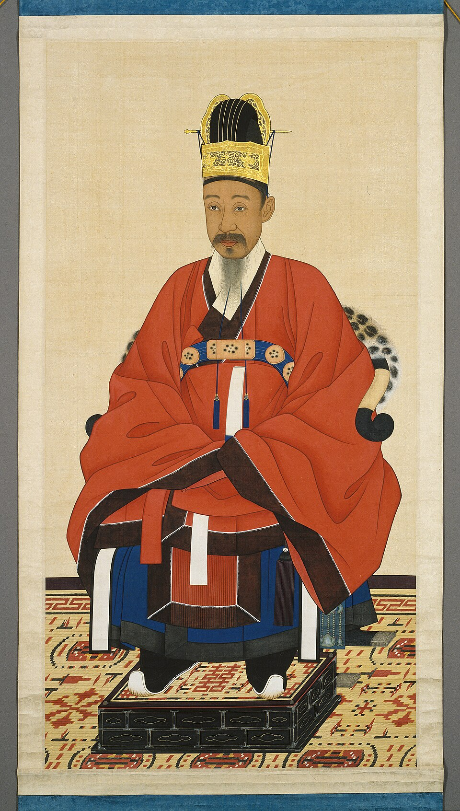
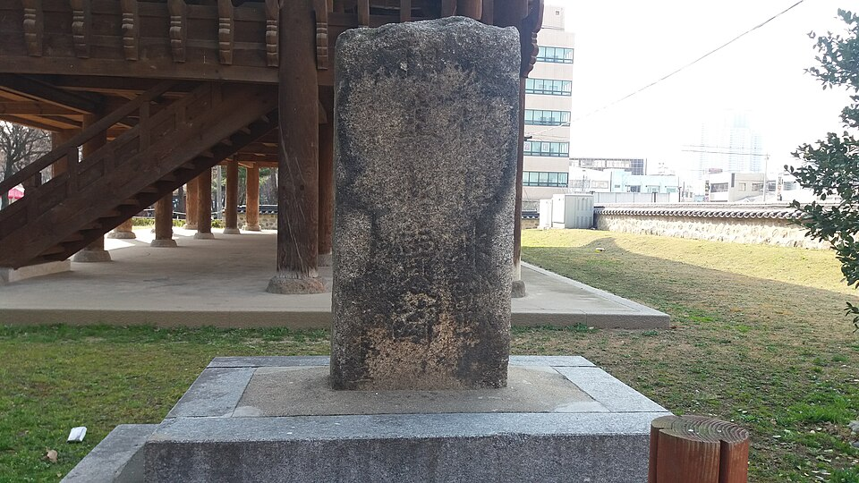
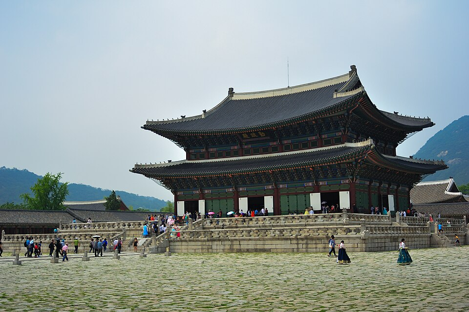

⏱️ 10초 카드 · 위기의 조선 (1820~1898)
섭정왕권 강화쇄국·척화비경복궁 중건
여는 질문 — 쇄국은 나라를 지키려는 자존심이었을까, 변화를 외면한 고집이었을까?
이름
한국어흥선대원군
원어興宣大院君
실제 발음흥선대원군 (이하응)
로마자Heungseon Daewongun
영어권Heungseon Daewongun
별칭이하응(본명)
왜 이 사람인가
'위기의 조선'을 한 사람으로 보면 대원군이에요. 무너진 왕권을 세우고 부패를 친 개혁가의 얼굴과, 세계의 변화에 문을 닫은 쇄국론자의 얼굴이 함께 있죠. 같은 시기 일본이 정반대 길(개항)을 간 것과 견주면, 그의 선택이 더 또렷이 보여요.
생애
조선 26대 왕 고종의 친아버지예요. 어린 아들이 왕이 되자 약 10년간(1863~1873) 실권을 잡고 나라를 다스렸죠. 안으로는 무너진 왕실의 권위를 세우려 서원을 대거 정리하고, 비변사를 없애 왕권을 강화했어요.
밖으로는 서양과의 통상을 거부하는 <b>쇄국</b> 정책을 폈어요. 병인양요·신미양요로 서양 함대와 충돌했고, 전국에 척화비를 세웠지요. 또 왕실 위엄을 위해 경복궁을 다시 지었는데(중건), 그 막대한 비용이 백성을 힘들게 하기도 했어요.
고종이 친정을 시작하고 며느리 명성황후 세력이 커지자 권력에서 밀려났어요. 이후 임오군란·갑오개혁 때 다시 전면에 나서기도 했지요. 강한 개혁가였는지, 시대를 거스른 쇄국론자였는지 — 그의 평가가 갈리는 만큼 '위기의 조선'은 복잡했어요.
자료로 보기 — 유묵·사진



남긴 말
“백성을 해치는 자라면, 공자가 다시 살아난다 해도 나는 용서치 않겠다.”
전국의 서원(특권 기관)을 대거 정리하며 한 말로 전해져요 — 기득권을 향한 그의 단호한 개혁 의지를 보여 주죠. · 출처: 서원 철폐에 관한 대원군의 말(전해지는 기록)
“서양 오랑캐가 침범하는데 싸우지 않으면 곧 화친이요, 화친을 주장함은 나라를 파는 것이다.”
전국에 세운 '척화비'에 새긴 글이에요. 서양과의 통상을 끝까지 거부한 그의 쇄국 의지가 돌에 새겨졌죠. · 출처: 척화비 비문(1871)
연표
- 1820출생 (본명 이하응)
- 1863고종 즉위 — 대원군 섭정 시작
- 1866병인양요 · 쇄국 강화
- 1871신미양요 · 척화비 건립
- 1873고종 친정 — 권력에서 물러남
- 1898사망
운현궁에서 청나라 유폐까지
권력의 정점에 섰다가 밀려나고, 청나라에 납치돼 억류되기까지 — 굴곡진 권력자의 길이에요.
현재 지도 위 표시예요. 한 나라를 호령하던 권력자가 이웃 나라에 납치돼 억류되던 시절, 조선은 그만큼 위태로웠어요.
빛과 그림자왕권을 세우고 부패를 친 개혁의 면과, 세계의 변화를 거부한 쇄국·무리한 토목의 면이 함께 있어요. '단호함'이 때로 '시대를 거스름'이 되기도 한다는 걸 보여줘요.
더 깊이 (고등·일반)
어린 아들이 왕이 되다
왕족이지만 권력에서 멀던 그는, 아들(고종)이 어린 나이에 왕이 되자 약 10년간(1863~1873) 대신 나라를 다스렸어요. 평생의 기회를 잡은 거예요.
안으로 — 왕권 강화와 개혁
그는 무너진 왕실의 권위를 세우려 했어요. 특권을 누리던 서원을 대거 정리하고, 권력 기관 비변사를 없애 왕에게 힘을 모았죠. 부패를 치는 단호함이 있었어요.
밖으로 — 쇄국과 두 번의 양요
그는 서양과의 통상을 거부했어요. 병인양요(1866)·신미양요(1871)로 프랑스·미국 함대와 충돌했고, 전국에 척화비를 세워 '문을 닫겠다'는 뜻을 못 박았죠.
경복궁 중건의 빛과 그림자
왕실의 위엄을 위해 그는 임진왜란 때 불탄 경복궁을 다시 지었어요(중건). 웅장한 궁궐이 다시 섰지만, 그 막대한 비용과 강제 동원이 백성을 힘들게 했죠.
엇갈리는 평가
고종이 친정을 시작하고 며느리 명성황후 세력이 커지자 그는 권력에서 밀려났어요. 강한 개혁가였는지, 시대를 거스른 쇄국론자였는지 — 평가가 갈리는 만큼 그가 산 시대도 복잡했어요.
이 인물이 나오는 이야기
더 공부하기 — 여기서 출발하세요
📚 책으로
- 흥선대원군 평전 ↗개혁가인가 쇄국론자인가 — 엇갈리는 평가를 함께.
- 근대 조선의 위기 ↗대원군 시대 조선이 놓인 국제 정세.
📜 1차 사료
- 흥선대원군 (한국민족문화대백과) ↗생애와 정책을 정리한 신뢰 자료.
📍 가 볼 곳
- 운현궁 (서울)대원군이 살며 정치를 펼친 집, 지금도 남아 있어요.
- 강화도두 번의 양요(병인·신미)가 벌어진 격전지.
- 척화비쇄국 의지를 새겨 전국에 세운 비석들.